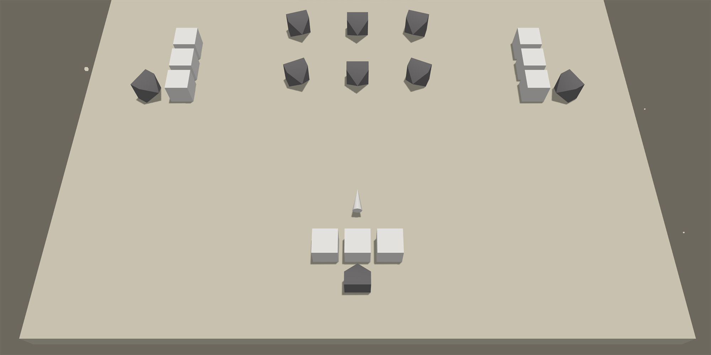

Showcases
NieR: Automata | YoRHa Hacking
This showcase is a basic JavaScript implementation of the hacking game from NieR: Automata. The game logic is developed with Yuka, rendering is done with three.js. The number of hacking stages as well as enemy and map types will be increased over time. The game is open source and available at GitHub.
